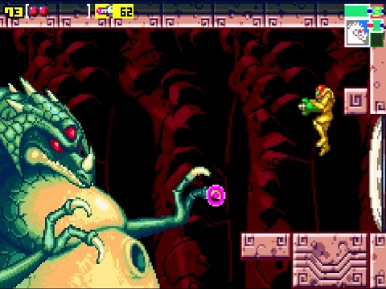

Metroid Zero Mission was released in 2004. The 2nd Metroid game to be released for the Game Boy Advance. This game takes you into the shoes of Samus Aran as she takes you into what she calls her Zero Mission. This game is a retelling of the original Metroid game that came out back in 1986. With updated graphics and an updated system, I gave this game a try and fell in love with it also. I had tried the original before and didn’t like it much just due to the fact of it being old. Not only that I felt the game to be very hard because of the limitations it had due to it being released for the original Nintendo system. If anything I recommend anybody to try this game first that way you can experience the story for yourself from the beginning.
